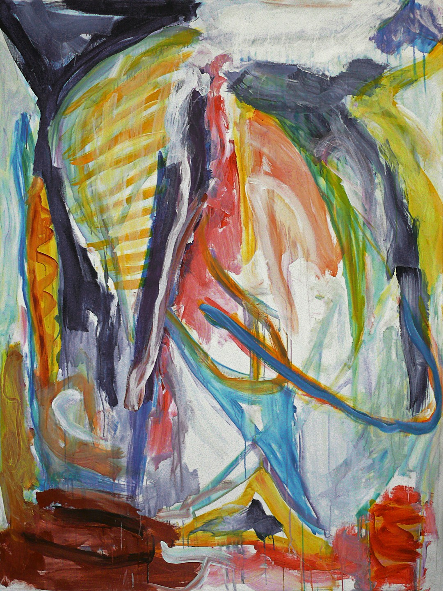

Récit
L’histoire derrière l’œuvre
Une peinture ne se limite pas à ce qu’elle montre. Elle garde les hésitations, les élans, les tensions et les silences qui l’ont fait naître. Cette page donne au regard un espace plus lent, plus narratif, plus profond.

Chaque œuvre porte une mémoire visuelle, une émotion suspendue, une vibration qui persiste au-delà du premier regard.
À travers ces séries, twagirumukiza construit un langage plastique fait de contrastes, de matières et de déplacements du sensible.
L’art devient ici une manière d’habiter le monde, d’en révéler les fractures comme les intensités discrètes.
